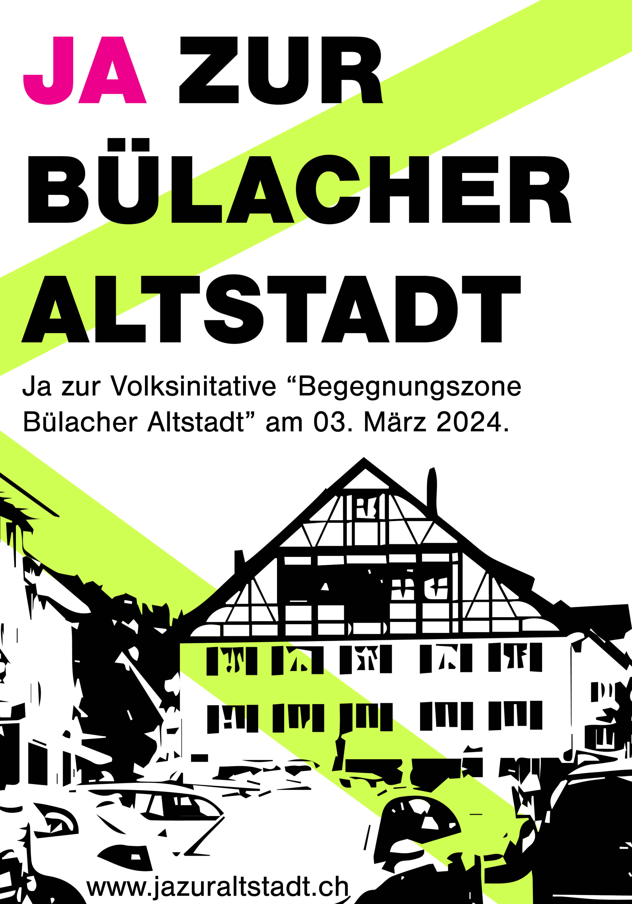
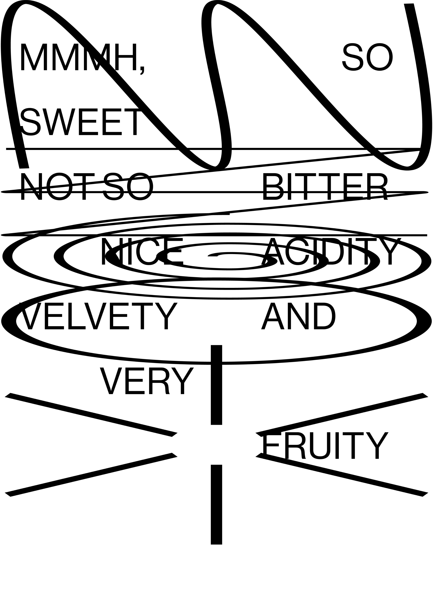

Project Description
This collection includes various graphic design projects I've created for both personal and client
use.
I enjoy using digital and analog techniques in order to achieve a visual interesting and unique outcome.
Programs and tools that I used include InDesign, Photoshop, Illustrator, Figma, Blender, pen and paper, scanners and digital cameras.
I enjoy using digital and analog techniques in order to achieve a visual interesting and unique outcome.
Programs and tools that I used include InDesign, Photoshop, Illustrator, Figma, Blender, pen and paper, scanners and digital cameras.
Overview


